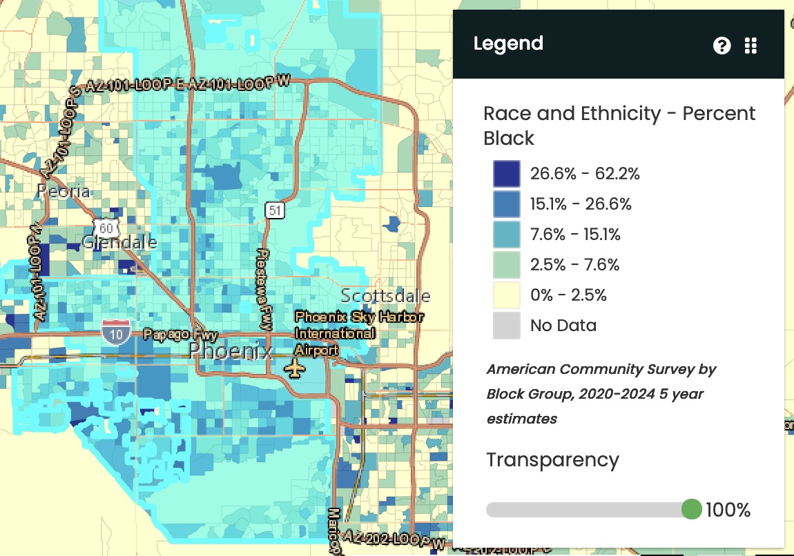
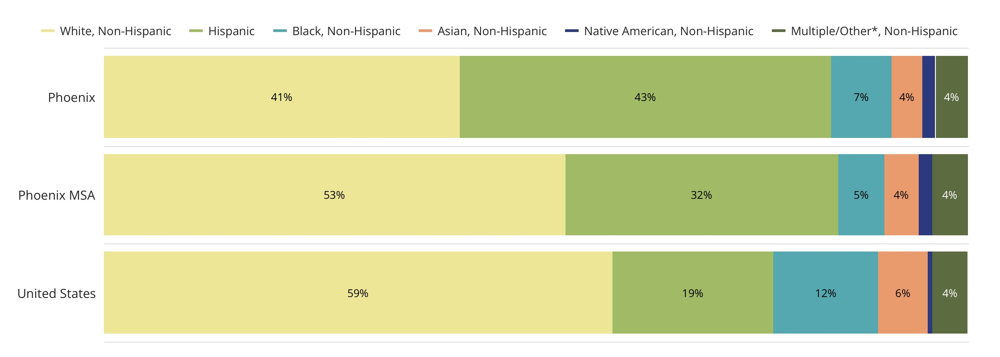

D1 · Story Frame
Understanding how systemic racism has affected American society in terms of crime and police brutality has been a topic of interest for me for quite some time. It is a set of policies and institutional structures that historically and currently affect housing, criminal justice, education, healthcare, and many other categories. While critics debate whether this institutional bias even exists or if these trends are because of socioeconomic class/cultural factors, this page will simply compile data from multiple government sources. The intent of this webpage is to consolidate and bring together multiple data sources to create a clearer image in regards to Arizona crime vs. demographic statistics.
D2 · Editorial Figures


D3 · Accessible Data Table
| Year | % of Anti-Indigenous Crimes | % of Anti-Hispanic/Latino Crimes | % of Anti-Asian Crimes | % of Anti-Black/African American Crimes | % of Anti-White Crimes |
|---|---|---|---|---|---|
| 2018 | N/A | 9.34% | 0.93% | 29.9% | 8.41% |
| 2019 | 1.28% | 12.8% | 1.28% | 50.64% | 6.41% |
| 2020 | 2.45% | 11.76% | 1.47% | 46.08% | 10.29% |
| 2021 | 1.42% | 8.57% | 2.14% | 49.29% | 8.57% |
| 2022 | 0.94% | 19.81% | N/A | 34.90% | 8.49% |
| 2023 | 1.79% | 13.39% | 3.57% | 42.86% | 6.25% |
| 2024 | 2.75% | 12.84% | 1.83% | 40.37% | 9.17% |
| 2025 | 2.23% | 27.61% | 1.49% | 44.03% | 5.22% |
Sourced from City of Phoenix Bias Crimes Statistics PDFs (phoenix.gov)
D4 · Race/Ethnicity* of Individuals Involved in Police Incidents
*To create the simplified race/ethnicity grouping utilized in the charts, individuals with an ethnicity entered as 'Hispanic' are included in the 'Hispanic' category, regardless of the race entered. Individuals with ‘Black or African American’ entered even if a blend such as Black/ White or American Indian/Black are included in the 'Black or African American' category. Individuals listed as Asian, Pacific Islander, Alaskan Native, American Indian, Other Blend, Etc., or with an unknown race, are grouped in the 'Other' category. Individuals with their race entered as White (that do not have their ethnicity listed as Hispanic) are grouped in the 'White' category. Full race/ethnicity information is available in detail on the (Open Data Portal).
D5-D6 · System and Documentation
Data Sources/Websites Used:
Arizona Demographics | Maricopa Association of Governments | Figure 1. Map Census
MAG Community Data Explorer | Maricopa Association of Governments | Figure 2. Bar Chart
Crime Maps and Stats | City of Phoenix | Bias Crime Statistics section
Phoenix Police Transparency Adult Arrests Dashboard | PHOENIX POLICE DEPARTMENT | Individuals Crime Demographic Bar Chart